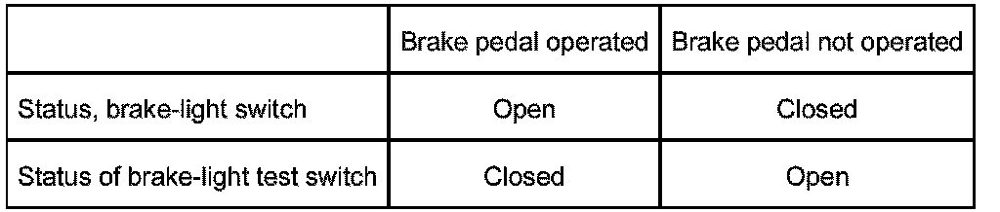

Brake Light Switch
Brake Light Switch
The brake-light switch serves to detect brake pedal operation.
Function
The brake-light switch is a Hall sensor fitted at the brake pedal. The switch is supplied with voltage by the light module as of terminal R ON.
The brake light switch supplies two signals:
- S_BLS Brake light switch
- S_BLTS Brake light test switch
These signals are received and evaluated by the individual control modules (choice, see table) independently of one another:
The redundant signal "Brake activated" as a directly wired signal and as a CAN message means that transmission is also ensured in the event of errors on a signal path.
In the engine management system, both signals of the brake-light switch are evaluated simultaneously. This direct comparison of the two signals makes it possible to establish definitely whether the brake pedal is being operated. Furthermore, a malfunction of the brake light switch can also be diagnosed.
The two signals of the brake-light switch behave in relation to one another according to the following table:

The following signal levels can be measured at the two outputs of the brake light switch:
Diagnosis
The signals of the brake-light switch are continuously checked by the engine management system as regards plausibility. In the event of errors, a fault is entered in the fault memory of the engine management system. Cruise control is also deactivated at the same time.